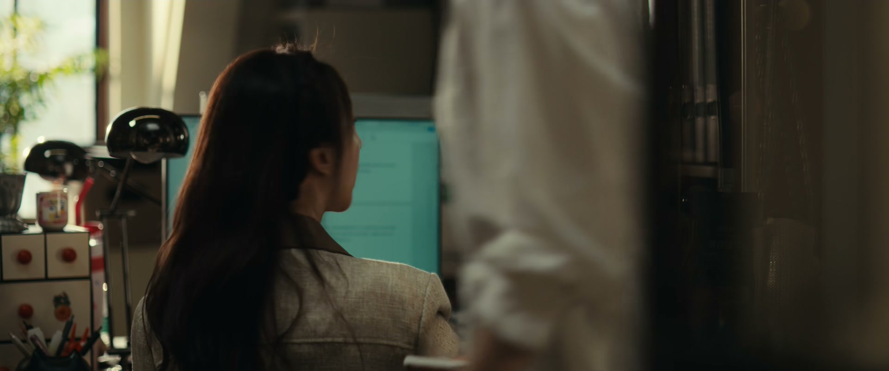
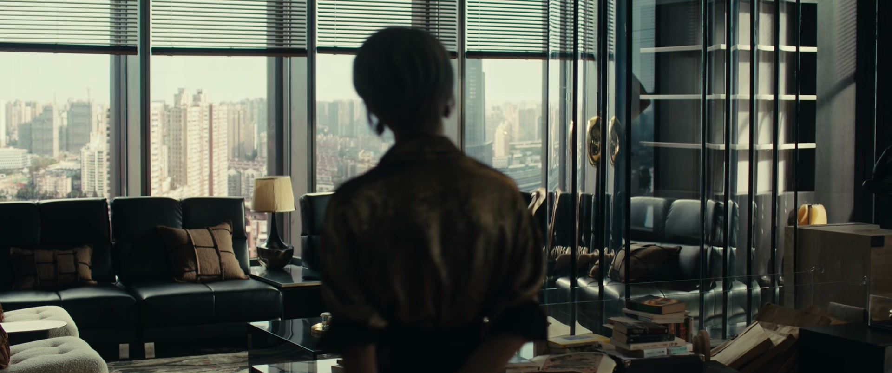
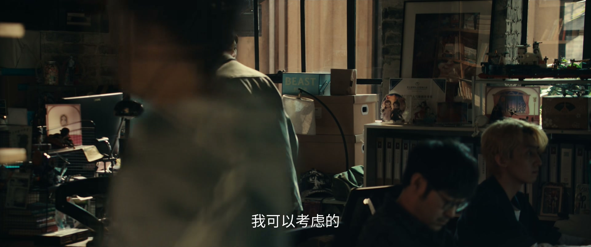
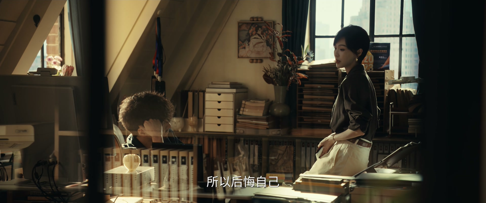

被激将时，先算算代价
情境：展翘一句「有本事停更一个月试试」，何韩当场把《六周》的停更从一周改成一个月，拱手让出一片市场。
遇到这种情况，可以这样做
- 情绪上头时做的承诺，往往要事后买单。
- 逞一时之勇前，先想清楚要付出什么。
- 真正的赢家，不受他人定义战场。
Drama Recap · 剧情图文总结
第 4 集 · 孤烟乍起
何韩被展翘一句激将，把《六周》的停更从一周改成一个月；神秘新人「孤烟」横空出世、二十章直接登顶第一，全行业都在猜他的身份——这张谁都没见过的牌，究竟握在谁手里
一句激将，让何韩把《六周》的停更从一周改成一个月——「行，一个月就一个月，我马上就罚，三十天！」而就在他空出的这片江湖里，一个谁都没听过的新人「孤烟」横空出世，二十章直接登顶第一。所有人都在猜：孤烟是谁？他手里的牌，又握在谁手里？
第 4 集，何韩在直播里宣布《六周》停更一周，理由是「把注意力都留给咪咪」。转头他给展翘打电话炫耀，却被展翘将了一军：「你有本事就停更一个月试试，看看你是不是还战无不胜！」何韩中了激将法：「行，一个月就一个月。」停更一出，赵兰心那边刚签的洪七公立刻坐地起价，要求加协议。
剧里的鸡毛蒜皮，往往是人生的缩影。这些情节不只是故事——当你在现实中遇到同样的处境时，它们能提醒你：先做什么、别做什么、怎么说才有效。
情境：展翘一句「有本事停更一个月试试」，何韩当场把《六周》的停更从一周改成一个月，拱手让出一片市场。
情境：何韩一停更，刚签约的洪七公立刻要求加协议，凌奕凯一边稳住他，一边盘算他到底值多少。
情境：周媚用「陈兴要出王牌」的假消息拖住投资人吴总，为展翘争取时间。
情境：展翘夹在分居的父母中间，替妈妈送菜被爸爸拒收，最后只说了句「我选我爸」。
情境：神秘新人孤烟一上线就登顶第一，全行业都在猜他的身份，连何韩都开始心虚。
情境：何韩想挖蔡掌珠去给咪咪当编辑，展翘用成长空间和真心，把她留在了陈兴。

何韩在直播里宣布：「今天要跟大家说一个非常重要的事情——从今天开始，《六周》停更一周。希望大家把注意力的时间都留给咪咪。」咪咪在镜头外连声道谢。转头他给展翘打电话炫耀：「我给你一个礼拜的时间，让你找到更好的作者。」
展翘不吃这一套，反手激将：「停更一个礼拜，对你来说实在是太小儿科了。你有本事，就停更一个月试试，看看你是不是还战无不胜！」何韩果然中计：「激将法，行，学聪明了嘛。没问题，一个月就一个月，我马上就罚——三十天！」
公司里有人拍手称快：「何韩停更一个月，我们的作者就可以放手去抢那把交椅了！」何韩则向咪咪解释这步棋：给展翘留一个月的「跑道」，让她有机会东山再起，顺便也给咪咪攒热度；他那位商业伙伴则催他交出下本书大纲，好去卖版权定金。
关键台词 · KEY QUOTES

何韩一停更，赵兰心新签的洪七公立刻坐不住了：「被何韩压在头上那么久，现在总算能翻身了。」下属凑上来：「恐怕为了这一个月，头牌都是洪姐您的了。」洪七公眯起眼睛：「小子，如果真是这样的话，我想我们的合约还是要再商量一下——我们再加一个五重协议。」
凌奕凯从洪七公那儿回来，对赵兰心交底：「他现在打算跟我们坐地起价。山中无老虎，猴子成大王。至少有一个星期，他会是头牌，你就多陪陪他、稳住他。」
「具体他有多大能力、多大价值，等一个月之后何韩出手，再定输赢。」凌奕凯的话，既是算计洪七公，也是给自己的新公司留一张牌。
关键台词 · KEY QUOTES
投资会上，周媚代表陈兴来见投资人吴总，凌奕凯也在场。吴总问起陈兴近况，周媚放出一个烟雾弹：陈兴即将推出重量级作品，新的秘密王牌。吴总追问：「你的这个王牌，在商业价值上可不可以和何韩、洪庆功抗衡？」周媚：「那哪能告诉你啊。」
散会后，周媚叮嘱自己人：「拖一拖嘛，半个月；不行一个礼拜，实在不行三天也好。千万不能让他（凌奕凯）知道。」凌奕凯在走廊拦住她：「你知道当年我为什么把你甩了吗？就是因为你做事情吃相太难看。」周媚不怒反笑：「吃相好能换来几千万投资吗？换不来——但是可以换来女人的尊重。」
凌奕凯讥她「所以根本没有秘密武器」，周媚收住笑：「你可以欺骗女人，女人一样可以欺骗你。智商和性别，没有关系。」吴总最后拍板：先等一周看看陈兴到底出什么牌。
关键台词 · KEY QUOTES
妈妈给展翘打电话，要提前给爸爸过六十岁生日，又怕爸爸不肯见自己：「一年三百六十五天，三百六十四天都是他要自由、要他自己的空间，我都给他了。我跟他都已经六十多岁了，一年一天，就算我们都能活到九十岁，加起来不过二十多天。这辈子我放过他了，下辈子我再也不见他了。」
展翘替妈妈把菜送到爸爸家。爸爸连门都没让她进：「我生日的事情也不要说了，出去吃个饭我答应，到这儿来不行。你回去把我这儿的情况告诉你妈，一切都很好，我不希望她来打扰我。」
展翘望着六楼窗户里那个倔老头——他宁愿一个人爬六楼，也不肯搬去跟妈妈住的电梯公寓。有人劝她「两个人不吵架也不离婚，就这么一辈子靠着」，她想了想，只说了一句：「我选我爸。」
关键台词 · KEY QUOTES
咪咪又一次想进何韩的卧室，又一次被拦在门口。「你为什么老不让我进你卧室啊？」「不习惯。」「那你什么时候能习惯？」「什么时候都不能。」
咪咪赌气：「你里面藏着另外一个女朋友，不止一个呢。」何韩不接话。她追问：「大山为什么就能进去呢？」何韩答：「因为他从来不会关心，里面有没有藏别的女人。」
咪咪站在门外，看着那扇紧闭的门，心里第一次对这段关系打了个问号：他连一间卧室都不肯对她敞开，嘴上却天天说爱她、为她停了整个平台的更——这份爱，到底有几分是真的？
关键台词 · KEY QUOTES
深夜，展翘和闺蜜聊起何韩的停更。「这么晚还不睡？」「因为何韩。」「人家自己说了，是因为咪咪啊。」「我看是给你让跑道——让你签约新作者的机会冒过头，否则你真的一蹶不振了，他是会心疼的，只是他自尊心强，不好意思直接说。」
展翘不认：「你们俩就是在妒忌。」闺蜜笑了：「其实谁都舍不得谁真的受苦。你公司离他酒店就隔一条马路，谁主动过个街和好，出什么事都没了。」
展翘望着窗外：「两条高速路在大航线上看是重叠的、是在一起的，但其实这两条路不但有距离，而且是通往两个目的地的。」闺蜜：「这世界上哪有通往一模一样目的地的两个人？不都是在一起，能走一程是一程。」
关键台词 · KEY QUOTES

「红庆功第一了？」「不是，那是谁啊？」「孤烟！孤烟是谁？听都没听过。」「一个新人，一上线就放出二十张，直接登顶。」全行业都被这匹黑马炸醒了。赵兰心那边的人面面相觑：「红姐，我们失算了。」
何韩这边也坐不住了：「我打电话去平台问了，是新人。」「这应该是一个改头换面的老手，会不会是个男人？」「如果不是何韩，那这个人以后一定是何韩最大的对手。」
有人一针见血：「这个孤烟一上来就放出二十张，那可不是什么天上掉馅饼的事——他是有备而来。」何韩开始心虚：「如果他真的是林展翘的命根子，那你这个良心补偿，有可能把自己将来的前途和地位都给补进去了。」又有人补一句：「如果孤烟是赵兰心的人，那该担心的，反而是洪七公。」
关键台词 · KEY QUOTES

洪七公给展翘打来电话：「喂，洪老师，这个孤烟是什么来头？是不是赵兰心新签的作者？我今天可以多更几章，你给我拿个首页推荐，明天我打个翻身仗，洪老师第一！」展翘慢条斯理：「我跟赵兰心不在同一个公司。您跟赵兰心现在是同一家公司，对你们公司的内容，我也不太了解。」
洪七公急了：「可是我还是陈兴的作者呀，我们的合作还没有到期，我们有合同的。」展翘一字一句：「按照合约，您在期满之后可以不跟我们续约，可以跟赵兰心的公司签约；按照合约，我也可以不给您首页的资源。」
洪七公低声下气：「我跟赵兰心还没有签约呀，我们续约有的谈，我可以考虑的。」展翘：「我就不考虑了，洪老师。」挂断电话，展翘分析：洪七公多半在赵兰心那边受了冷落才回头，陈兴跟他好聚好散，反而对局面有利。
关键台词 · KEY QUOTES
「现在外面都以为孤烟是我们新签的作者。」「查到他是哪家的人了没有？」「还没有。金主的电话也不接，肯定也是来问孤烟的。」孤烟的身价越炒越高，范叔那边下了死命令：「不惜一切代价，三天签下孤烟。」
有人劝阻：「三天？你疯了，连孤烟在哪里你都不知道。」「孤烟也不是你说想签就能签下的，今天下午还有新作者签约会呢。」「签下孤烟，可以提升我们在行业的评级，这一轮投资一点五倍投给我们。」
「我们现在赌不起，很有可能颗粒无收；孤烟不一样，他的价值已经确定了。」最后有人接话：「万一他已经签给别人了呢？」回答掷地有声：「重新来的东西，想要就一定会想办法得到。等我好消息。」
关键台词 · KEY QUOTES
蔡掌珠来陈兴面试助理编辑，在电梯里撞见偶像何韩。何韩打趣：「新女朋友，刚在电梯上认识的。」面试时，掌珠说自己背得下何韩所有名场面，还当场展示了一幅她画的小说人物图。展翘打断她：「蔡小姐，如果你来陈兴是来追星的，那我明确告诉你，何韩和陈兴已经没有任何合作了。」
何韩顺势截胡：「不如这样吧，你要是不嫌弃，你就到我这儿来。我女朋友咪咪最近刚好需要一个编辑。」掌珠的眼睛一下子亮了：「那如果能跟何韩老师一起工作的话，我真的做什么都可以。」何韩：「不过最近停更一个月，就先帮咪咪，等我恢复更新了再帮我怎么样？咱们走吧。」
展翘叫住她：「好，等一下，蔡小姐。我始终认为，陈兴可以让你成长得更快、学到更多的东西。我们这里作者数量多、编辑队伍齐整，方便你刚入行就看到一个全局。」掌珠犹豫：「一个月之后，不就可以跟着何韩老师做《六周》了？」展翘：「一个月以后的事情，谁又说得准呢。」最后四个字定音：「明天就来上班。」
关键台词 · KEY QUOTES

展翘来找何韩，开门见山问孤烟是谁。何韩一眼看穿她的心思：「你害怕了？后悔答应我停更一个月是吧？你可以反悔，不需要什么条件，你只需要承认你狂妄自大就可以。」展翘不接茬，反问他：「你害怕了，否则你不会来问我孤烟是谁。」
何韩又提起她卖掉的那个故事：「你是因为上个项目赔了，没信心了，索性把这个卖了、落袋为安？这不像你啊，林展翘。」他补一刀：「你是看到人家一上线就登顶，所以后悔自己没有继续写下去这个故事是吧？你不得不承认，前面那二十张，那个孤烟写得就是比你好。」
临走，何韩抛下警告：「丢了洪七公，自己引以为傲的孤烟……你手里还有什么牌？铁打的笔，流水的作者。我是笔，我不怕等，但你等不了。你很快就会被取代，好自为之。」说完，又若无其事地补一句邀请：「咪咪的《重新狂摸》进前三了，晚上庆祝一下，你要不一起？」
关键台词 · KEY QUOTES
展翘约贝律师在酒吧谈事，滴酒不沾：「聊工作，我不喝酒。」贝律师劝她该立规矩的时候要立规矩。展翘坚持告上法庭：「让他们赔偿，两个人公开给我道歉。」她不怕被人嚼舌根：「正好让公司那些人看看，欺负我、诽谤我的下场。」贝律师最后应下：「那我就把事情给你做得声势大一点。」
咪咪的庆功宴上，人群里忽然有人发难，对着周媚破口大骂：「他有点钱的时候你就真心相爱，没钱的时候就是缘分已尽！做皮肉生意的都比你要脸！」展翘刚要发作，贝文祺已经挡在前面，一字一句：「他是我的律师，所以你给我小心一点。」那人讪讪退开。
人群散后，蔡掌珠才对展翘坦白：「他是我爸。我爸赚点钱都让女人给骗走了，我还有两个弟弟，加上我，我们三个都是我爸和不同的女人生的。看顾好你和你妈的那份财产，必要的时候，我可以帮你把公证做好。」展翘看着这个整天笑呵呵的姑娘，第一次读懂她笑容底下的东西。
关键台词 · KEY QUOTES
一句激将让何韩把停更改成一个月；洪七公回头续约被她拿合同拿捏；留下蔡掌珠入职陈兴；深夜对质孤烟身份时被何韩点破「你害怕了」——她在这一集不动声色地布下棋局。
被激将后豪气宣布停更一个月，转头就心虚孤烟的身份；卧室的门始终不对咪咪敞开；嘴上警告展翘「你很快就会被取代」，最后却邀她来咪咪的庆功宴。
投资会上放「陈兴要出王牌」的烟雾弹拖住吴总，被凌奕凯当面翻旧账「吃相难看」，不卑不亢地顶回去；庆功宴上被蔡德璋当众辱骂，贝文祺亮出律师身份护住她。
带着新公司与旧东家在投资会上短兵相接，被周媚的烟雾弹搅了局；一面稳住坐地起价的洪七公，一面与周媚互揭伤疤。
来陈兴面试助理编辑，被何韩与展翘两家争抢，最终答应「明天就来上班」；酒吧里向展翘坦白那个四处留情的父亲蔡德璋，以及自己同父异母的身世。
《重新狂摸》冲进前三，是庆功宴的主角；三番两次想进何韩的卧室都被拦下，对这段关系第一次起了疑心。
在酒吧替展翘谋划打官司，又当场亮明律师身份护住被辱骂的周媚——这个沉稳的男人，正在一步步走进展翘的生活。
展翘一句激将，何韩当场把《六周》的停更从一周改成整整一个月——这一局，谁输谁赢，要等一个月后见分晓。
神秘新人一上线就放出二十章、直接登顶第一，全行业都在猜他的身份，连何韩都开始心虚「怕一个月后没人知道我是谁」。
投资会的走廊上，周媚被前男友当面羞辱「吃相难看」，她不慌不忙地回敬「你可以欺骗女人，女人一样可以欺骗你」。
庆功宴上蔡德璋当众辱骂周媚，贝文祺一句「他是我的律师」镇住全场；人群散后，蔡掌珠才把那个渣男父亲的身世和盘托出。
「两条高速路看是重叠的、是在一起的，但其实不但有距离，而且通往两个目的地。」何韩和展翘，就是这样两条路。
孤烟一上线就登顶，何韩怀疑它是展翘的秘密武器，展翘却矢口否认——这张牌到底属于谁，将成为后续最大的悬念。
咪咪始终进不了何韩的卧室，「大山」却能进去——那扇门后面藏着什么，又是谁，等着被揭开。
洪七公跟赵兰心尚未签约，回头找展翘续约又被拿捏——这颗墙头草，最终会落在哪一边？
蔡掌珠那个处处留情、觊觎财产的父亲在酒吧登场——他会如何纠缠女儿，又会不会波及展翘她们？
有人一句话点破何韩与展翘之间仍未断的情愫——嘴上的井水不犯河水，挡不住心里的暗流。